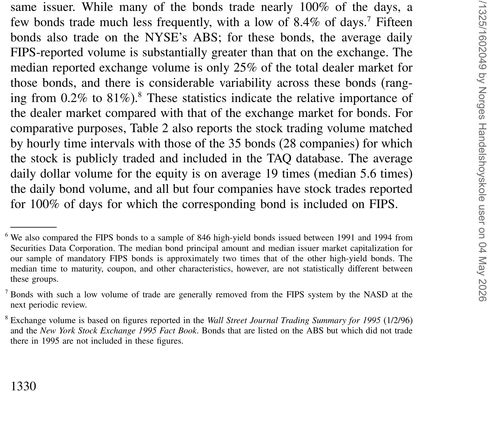
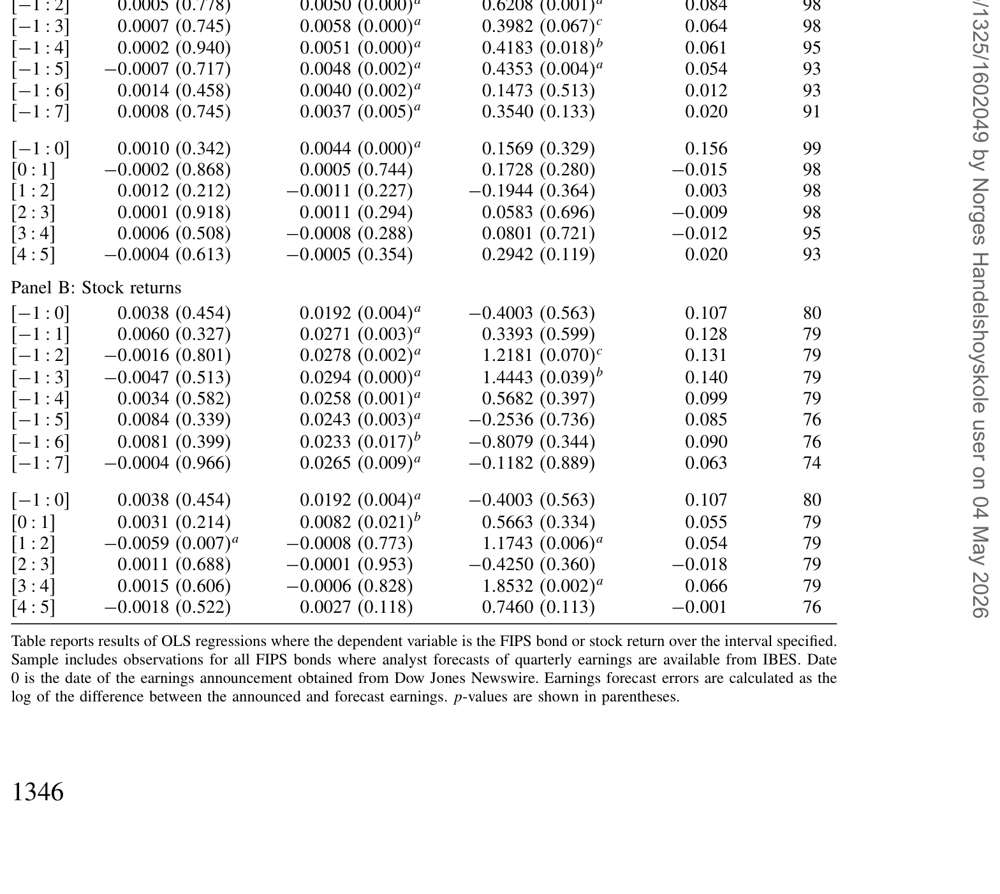
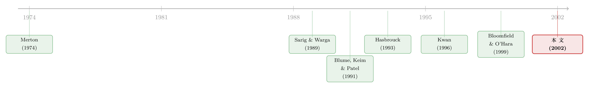

债市真的「迟钝」吗？——一份按小时记录的高收益债账本
本文读的是 Hotchkiss & Ronen (2002, Review of Financial Studies)：他们用 NASD「FIPS」系统里 55 只高收益债 1995 年的日内逐小时成交价，把「债市比股市迟钝、股票先反映信息、债券慢半拍」这条流传已久的直觉拎出来逐一对质——结果发现，债券的信息效率与同一家公司股票几乎没有差别，股票并不领先债券，财报消息进入两个市场的速度也一样快。
1 一句被反复引用的「常识」
先看一段引文。1998 年，时任美国证监会主席 Arthur Levitt 在《华尔街日报》上撂下一句重话：
"投资公司债的人，享受不到买车的人、买房的人、甚至——容我说一句——买水果的人所拥有的那种信息。提高透明度，是我们的头等大事。"
这句话之所以有杀伤力，是因为它说中了一个长期被默认的判断：公司债市场是个黑箱。它由交易商 (dealer) 撮合，成交价不公开，研究者手里能拿到的，往往只是某一家交易商每周、每月报一次的报价 (quote)，而非真实的成交价 (transaction price)。Gehr and Martell (1992) 甚至用这类报价数据得出过一个相当刺耳的结论：「这个交易商市场以极端的信息无效率为特征」——因为他们发现不同交易商之间的买卖报价常常根本不相交。
于是一条直觉就这么立住了：既然债市这么不透明，股市又是信息进出最快的地方，那么关于一家公司的新消息，一定是先被股价反映、再慢慢渗到债券价格里。Kwan (1996) 把这条直觉做成了实证——他发现，滞后的股票收益对当期的债券收益率变动有解释力，并据此论证「个股领先债券反映公司特有信息」。
这就是本文要面对的张力。Hotchkiss 和 Ronen 的问题很简单，却以前没人答得了：
如果我们能拿到债券真实的、逐小时的成交价，「股票领先债券」这件事，还成立吗？
2 一个 1994 年才出现的数据缺口被补上了
要回答这个问题，缺的从来不是方法，而是数据。这正是本文的起点。
1994 年 4 月，NASD 上线了一套叫做固定收益定价系统 (Fixed Income Pricing System, FIPS) 的电子报价与监控系统。它第一次要求做市商在成交后 5 分钟内上报约 50 只高收益债的交易，并把每小时的最高价、最低价和成交量显示在终端上。换句话说，研究者头一回能看到公司债的真实成交价，而且是日内频率的。
本文用的就是这套数据：1995 年 1 月 3 日到 10 月 31 日之间、FIPS 上的 55 只高收益债，来自 44 家发行公司。表 1 给出了样本特征——发行公司体量不小（资产账面价值中位数 $1820.3 百万），杠杆普遍偏高（与它们「投资级以下」的评级相符），发行规模平均 $374 百万；债券结构里嵌入期权很常见，42 只（76.4%）可赎回，9 只（16.4%）有偿债基金条款。
Table 1: provides summary characteristics for the 55 FIPS bonds from 44 user
这里有一个识别上的关键细节，值得停一下。FIPS 上的债券不是随机抽的——NASD 的顾问委员会专门挑了当时最活跃的那批券：成交量大、有多个做市商愿意做市、而且「交易模式更接近发行人的股票」。这既是好事也是隐患：好处是这些券交易频繁，能做日内分析；隐患是，如果你最后发现「债市效率不差」，批评者完全可以说——你挑的本来就是最像股票的那批债券。这个内生性问题，我们留到最后再算账。
为了进一步压住非同步交易 (nonsynchronous trading) 的干扰，作者又从中拣出 20 只最活跃、且其股票公开交易的债券，构成一个组合。这 20 只券平均在样本期 95% 的交易日里成交，在 FIPS 每天报告的 7 个小时区间里平均成交 3.5 个小时。后面所有的回归、因果检验和市场质量检验，都建立在这个「最干净」的子样本上。

Table 2: documents trading volume for the FIPS bonds. There is consid-
表 2 还顺带量出了一件事：即便是这些「最像股票」的债券，其股票的日均美元成交量，平均仍是债券的 19 倍（中位数 5.6 倍）。债市天然更薄——这一点谁都没否认。问题只在于：薄，是否就等于慢、等于笨？
3 为什么股和债会一起动——先把经济逻辑摆正
在动手做因果检验之前，得先想清楚：股票收益和债券收益之间，应该有什么关系？
这要回到 Merton (1974) 的结构化视角。把公司的资产价值看作底层标的，那么：股权是一份对公司资产的看涨期权；而债权，等价于「持有一份无违约风险的债券，同时卖出一份对公司资产价值的看跌期权」。用一个干净的式子写出这层关系：
这条分解一摆出来，两件事立刻清楚了。
首先，凡是抬高公司资产价值 \(V\) 的信息，在其它条件不变时，会同时抬高股票（看涨期权更值钱）和债券（卖出的看跌期权更不值钱、\(D\) 上升）——于是股债收益之间应当存在正的同期相关。这正是 Blume, Keim, and Patel (1991)、Cornell and Green (1991) 用月度、周度数据反复观察到的现象。
接着，一个自然的问题是：相关，是不是就等于「谁领先谁」？不是。如果股价真的更有效率、更快反映信息，我们应当看到一种交叉序列相关 (cross-serial correlation)——也就是滞后的股票收益能预测当期的债券收益。Kwan (1996) 声称看到了这个，于是得出了「股票领先」的结论。
但真正关键的一步在于：用月度报价数据，你根本分不清「同期相关」和「领先—滞后」——频率太粗，一个月内发生的所有事都被压成了一个点。只有日内成交价，才能把这两件事真正掰开。
（关于「股与债是否在听同一个人说话」这个更一般的问题，可参见《股与债，到底在听同一个人说话吗？》。）
4 识别策略：用 VAR 把「领先」逼到墙角
这就是本文方法上的核心动作，也是它区别于前人的地方。
作者没有沿用 Kwan (1996) 那种「当期债券收益对滞后股票收益做回归」的简单设定，而是改用向量自回归 (vector autoregression, VAR) 框架，并在其上做格兰杰因果检验 (Granger causality test)。逻辑是这样的：把债券收益 \(R^B\)、股票收益 \(R^S\)、以及剥离了利率风险的「无违约债券收益」\(R^D\) 放进同一个系统，让每个变量都对所有变量的滞后项回归，然后问一个干净的问题——
在已经控制了债券自身滞后项之后，股票的滞后收益，还能不能额外解释当期的债券收益？
如果能，「股票领先债券」成立；如果不能，那所谓的领先就只是「同期一起对共同信息做反应」的幻觉。
为了让债券收益本身干净，作者下了不少功夫。日度债券收益 \(R^B_{i,t}\) 用当日最后一个成交小时的高低价中点计算，并对应计利息和票息做了调整；更要紧的是，他们用 Telerate 的在险国债曲线、按 Fisher, Nychka, and Zervos (1994) 的方法拟合三次样条，构造出一条「现金流与高收益债完全匹配（除嵌入期权外）」的无违约债券价格序列，由此得到 \(R^D_{i,t}\)——这一步把利率风险从信用信息里隔离了出来。股票收益 \(R^S_{i,t}\) 则取自 TAQ 数据库中、与债券最后成交小时对应的那一小时的最后成交价。
作者特意提醒：用「最后成交小时的中点价」来算债券收益，这种时点选择实际上偏向于让股票显得反应更快（论文脚注 14）。也就是说，方法本身就给「股票领先」开了后门——可即便如此，下面的结论依然没站在股票那一边。这种「我故意让对方占便宜，结果对方还是没赢」的设计，让结论格外有说服力。
5 反转：股票并不领先债券
于是反转出现了。
第一，同期相关确实在。 在日度和日内（逐小时）两个层面，债券收益与股票收益之间的正相关都显著存在——这一点与前人一致，本文没有翻案。
第二，但「领先」不在。 格兰杰因果检验的结论很干脆：滞后的股票收益，在解释债券收益时并不显著。表 8 报告了基于日度数据的回归与检验统计量——一旦把债券自身的动态控制住，股票的滞后项就不再带来增量解释力。

Table 8: reports results for regressions using daily data. Test statistics are
换句话说，Kwan (1996) 看到的「滞后股票收益有解释力」，在更高频、更干净的成交价数据下站不住。本文给出的解读是：股债之间那个挥之不去的正相关，最好被描述为两个市场对共同因子的「联合反应」，而不是一个市场领先、另一个市场跟随的因果链。债市没有慢半拍。
接着，一个更尖锐的检验：如果债市真的迟钝，那它对公司特有信息的反应应该明显滞后。作者于是转向盈余公告 (earnings announcements)——这是最干净的公司特有信息事件。结果是：日度和日内的高收益债收益，都与未预期盈余 (unanticipated earnings) 显著相关；而且这条信息进入债券价格的速度，与进入股票价格的速度一样快，即便在很短的收益窗口上也是如此。债券对「自家公司的消息」毫不迟钝。
最后一步，把「市场质量」也量一遍。 仅有「信息进得快」还不够，作者还想知道两个市场的质量 (market quality) 孰优孰劣。他们借用 Hasbrouck (1993) 的方法，把价格分解成随机游走成分（代表有效价格）和平稳成分，后者的方差——即定价误差 (pricing error)——衡量价格偏离有效价格的程度。为了在日内层面估计这个方差，作者考虑了两种不同的识别约束。结论再一次指向同一个方向：低评级债券的市场质量，并不比这些公司股票的市场质量更差。
三条证据，一个核心结论：就信息效率而言，这批高收益债的表现，和它们底层股票几乎没有区别。
6 文献脉络
把这篇论文放回它所在的那条线里看，会更清楚它的位置。
最上游是 Merton (1974)——他用结构化期权框架，第一次把股权和债权同时锚定到公司资产价值上，为「股债为什么会一起动」提供了理论地基。接着是数据的困境：Sarig and Warga (1989) 系统记录了公司债数据的种种毛病，Goodhart and O'Hara (1997) 更直言固定收益市场研究因数据匮乏而存在「严重的缺口」。正因如此，那一代关于股债关系的实证——Blume, Keim, and Patel (1991)、Cornell and Green (1991)、直到 Kwan (1996)——都只能建立在月度/周度报价之上，并由此推出「股票领先债券」的判断。

与此同时，市场微观结构这一支也在积累工具：Glosten and Milgrom (1985) 奠定了知情交易与价差的分析框架，Hasbrouck (1993) 给出了用定价误差衡量市场质量的办法，而透明度之争——Madhavan (1995) 担心强制披露反而让知情者得利，Naik, Neuberger, and Viswanathan (1999) 则提醒及时披露在某些情形下损害公众投资者福利，Bloomfield and O'Hara (1999) 的实验证据却发现交易披露显著改善了信息效率。本文恰好坐在这两条线的交汇处：它用 FIPS 这套前所未有的日内成交价数据，既推翻了基于粗频报价的「股票领先」结论，又给「透明度—效率」之争添上了一块来自真实市场的拼图——哪怕 FIPS 提供的事后透明度远不如股票，债券价格依然把信息吸收得又快又准。
后来这条线继续生长：TRACE 取代 FIPS、把公司债透明度的实验做到了全市场规模（关于这场实验，可参见《掀开交易商的「桌布」：一场被监管钦定的公司债透明度实验》）；而「市场要多久才把信息消化干净」这个问题，也被后人装上了更精细的秒表（参见《市场要多久才「想明白」？——给效率装上一只秒表》）。
7 评论与延伸（Q&A + 研究方向）
(a) 几个可能的疑问
Q：同期正相关都在，凭什么说「没有领先」就是新结论？
因为「正相关」和「领先—滞后」是两件事。月度数据把一个月内发生的一切压成一个点，根本无法区分二者；Kwan (1996) 在那种频率下把正相关误读成了因果。本文用日内成交价 + VAR 格兰杰检验，证明一旦控制债券自身滞后，股票滞后项不显著——领先关系是数据频率制造的幻觉。
Q：样本只有 55 只券、不到一年，结论能推广吗？
这是最该警惕的地方。样本期是 1995 年 1 月到 10 月，且券是 NASD「挑出来的最活跃券」。结论严格说只适用于「最像股票的那批高收益债」，不能直接外推到流动性差的、投资级的、或危机期的债券。
Q：FIPS 的券是被精挑细选的，这会不会让结论「先天偏向效率」？
会，这正是核心隐患。NASD 选券标准之一就是「交易模式更接近发行人股票」。所以「债市效率不比股市差」很可能是选择效应：你挑了最活跃的券，自然测出最高的效率。作者用「20 只最活跃券」子样本是为压住非同步交易，但这同时也加重了选择问题。
Q：用「最后成交小时中点价」算债券收益，会不会反而帮了债券？
恰恰相反。作者明说（脚注 14）这种时点选择偏向于让股票显得更快。也就是说方法给「股票领先」开了后门，结果股票仍没赢——这让「不领先」的结论更稳，而非更弱。
Q：盈余公告反应一样快，会不会是消息早就泄露进债价了？
有可能。高收益债持有人多为机构，私下信息渠道丰富。若消息在公告前已被定价，事后看到的「同步快速反应」可能部分是预先泄露。本文未直接处理公告前的渐进定价路径，这是个未尽的口子。
Q：那 Levitt 主席的「债市黑箱」批评，是不是被推翻了？
没那么绝对。本文说的是：即便透明度低，最活跃的那批高收益债的信息效率也不差——作者甚至猜测，正是 FIPS 引入的有限透明度促成了这种效率。但对广大不活跃、不上报的债券，透明度问题依然成立。这反而支持了「提高透明度」的方向，只是把效率低的板子从「最活跃券」身上挪开了。
(b) 几个可能的研究问题与提案
1. 用 TRACE 全样本重做这场「股债领先—滞后」对质。 【经济故事】FIPS 只有 55 只精选券，选择效应无法排除。TRACE 覆盖几乎全部公司债，能把「活跃券 vs. 不活跃券」「投资级 vs. 高收益」分层比较——领先关系会不会只在不活跃券里出现？ 【可行性】高。TRACE 逐笔成交 + CRSP 股票数据，VAR/格兰杰检验现成，按流动性分组即可识别异质性。唯一门槛是处理 TRACE 早期成交量上限掩码。
2. 危机期里，谁先动？ 【经济故事】本文样本是平静的 1995 年。但在 2008 或 2020 这种流动性骤干的时刻，债市可能反而领先股市——因为信用恐慌先打在债券上。把领先—滞后关系做成「随流动性状态切换」的，会很有意思。 【可行性】中高。TRACE + 日内股票数据 + 状态切换（如 VIX 或债券流动性指标）分样本。识别上要小心危机期的非同步交易急剧加重。（可与《差点死掉的那个市场：一场公司债流动性危机的微观解剖》对照。）
3. 外资持有比例如何改变债券的信息效率？ 【经济故事】若外资机构信息渠道与本地不同，他们持有较多的债券，其价格发现路径可能不同——是更快（带来全球信息）还是更慢（信息劣势）？这直接接上「外资是否有信息劣势」的争论。 【可行性】中。需要债券层面的持有人结构数据（如保险公司 NAIC、共同基金持仓）+ TRACE。识别外资份额的外生变动是难点，或可借指数纳入等事件。
4. 盈余公告前的「渐进定价」：债价是否提前于股价泄露？ 【经济故事】高收益债以机构为主，若私下信息更早进入债价，公告前债券的价格漂移可能领先股票——这能把「同步反应」的表象拆成「谁先偷跑」。 【可行性】中。TRACE 日内成交 + IBES 未预期盈余，做公告窗口的事件研究。难点是债券日内成交稀疏，需要足够活跃的券与足够多的公告。
5. 用 Hasbrouck 定价误差给「透明度改革」做前后对照。 【经济故事】本文用定价误差量市场质量，TRACE 分阶段披露则提供了天然的透明度冲击。改革后债券的定价误差方差是否下降、且向股票收敛？ 【可行性】高。TRACE 分阶段上线是干净的交错事件，配合稳健的交错 DiD（注意《当「更稳健」的设计悄悄把符号弄反了》的教训）即可识别。
8 我的判断与参考文献
贡献。 这篇论文的分量，不在某个炫目的系数，而在它第一个用真实的、日内频率的公司债成交价，把一条被默认了二十年的「债市迟钝、股票领先」的直觉，干净利落地证伪。它的方法论纪律值得称道：用 VAR + 格兰杰检验取代天真的滞后回归，用样条拟合的无违约债券剥离利率风险，用 Hasbrouck 定价误差独立地度量市场质量，甚至主动选择一个「偏向让股票占便宜」的收益时点——三条互不依赖的证据指向同一个结论，比任何单一回归都更可信。
对识别的担忧。 最大的软肋是选择效应：FIPS 的券是 NASD 按「最像股票」挑出来的，本文的「20 只最活跃券」又在此基础上再精选一层。所以「债市效率不比股市差」这个结论，严格说只是「最活跃的那批高收益债不比股市差」。它没有、也无法回答广大不活跃债券的效率问题——而那恰恰是 Levitt 主席真正担心的部分。此外，样本期短（1995 年 10 个月）、且处在一个平静的市场环境，把结论推到危机期是危险的。
后续想看到什么。 我最想看的，是用 TRACE 全样本按流动性分层重做这场对质，看「股票领先债券」会不会在不活跃券里复活；以及在 2008/2020 这样的应激时刻，领先关系是否反转为「债先动、股后动」。如果是，那本文的结论就该被重新表述为：在平静期、对最活跃的券，债市与股市同样高效——这是一个重要、但有明确边界的结论。
参考文献
- Blume, M. E., D. Keim, and S. Patel (1991). Returns and Volatility of Low Grade Bonds. Journal of Finance 41, 49–74.
- Bloomfield, R., and M. O'Hara (1999). Market Transparency: Who Wins and Who Loses? Review of Financial Studies 12, 5–13.
- Cornell, B., and K. Green (1991). The Investment Performance of Low Grade Funds. Journal of Finance 46, 29–48.
- Fisher, M., D. Nychka, and D. Zervos (1994). Fitting the Term Structure of Interest Rates with Smoothing Splines. Working paper, Federal Reserve Board.
- Gehr, A., and T. Martell (1992). Pricing Efficiency in the Secondary Market for Investment-Grade Corporate Bonds. Journal of Fixed Income 2(3), 24–38.
- Glosten, L., and P. Milgrom (1985). Bid, Ask and Transaction Prices in a Specialist Market with Heterogeneously Informed Traders. Journal of Financial Economics 14, 71–100.
- Goodhart, C., and M. O'Hara (1997). High Frequency Data in Financial Markets: Issues and Applications. Journal of Empirical Finance 4, 73–114.
- Hasbrouck, J. (1993). Assessing the Quality of a Security Market: A New Approach to Transaction-Cost Measurement. Review of Financial Studies 6, 191–212.
- Hong, G., and A. Warga (2000). An Empirical Study of Corporate Bond Market Transactions. Financial Analysts Journal 56, 32–46.
- Kwan, S. (1996). Firm Specific Information and the Correlation Between Individual Stocks and Bonds. Journal of Financial Economics 40, 63–80.
- Madhavan, A. (1995). Consolidation, Fragmentation, and the Disclosure of Trading Information. Review of Financial Studies 8, 579–603.
- Merton, R. (1974). On the Pricing of Corporate Debt: The Risk Structure of Interest Rates. Journal of Finance 29, 449–470.
- Naik, N., A. Neuberger, and S. Viswanathan (1999). Trade Disclosure Regulation in Markets With Negotiated Trades. Review of Financial Studies 12, 873–900.
- Sarig, O., and A. Warga (1989). Bond Price Data and Bond Market Liquidity. Journal of Financial and Quantitative Analysis 24, 367–378.
- Schultz, P. (2001). Corporate Bond Trading Costs and Practices: A Peek Behind the Curtain. Journal of Finance 56, 677–698.